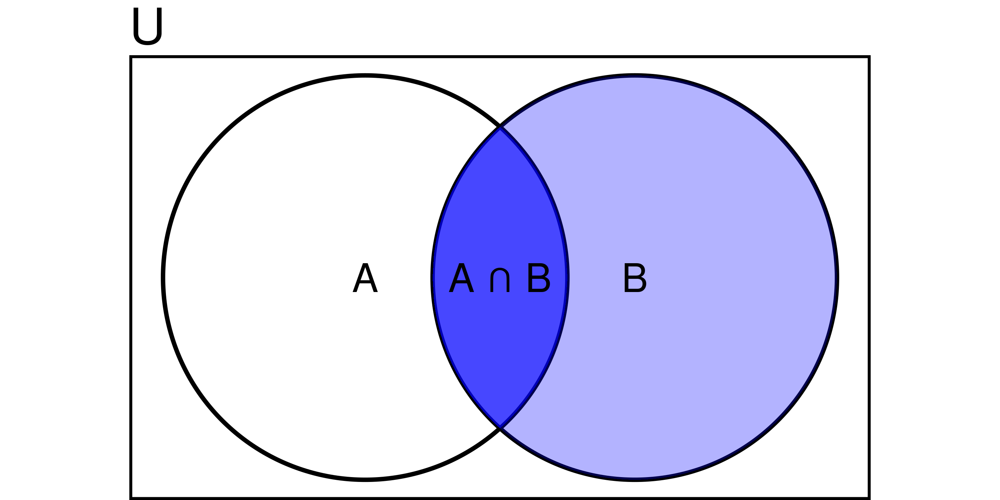
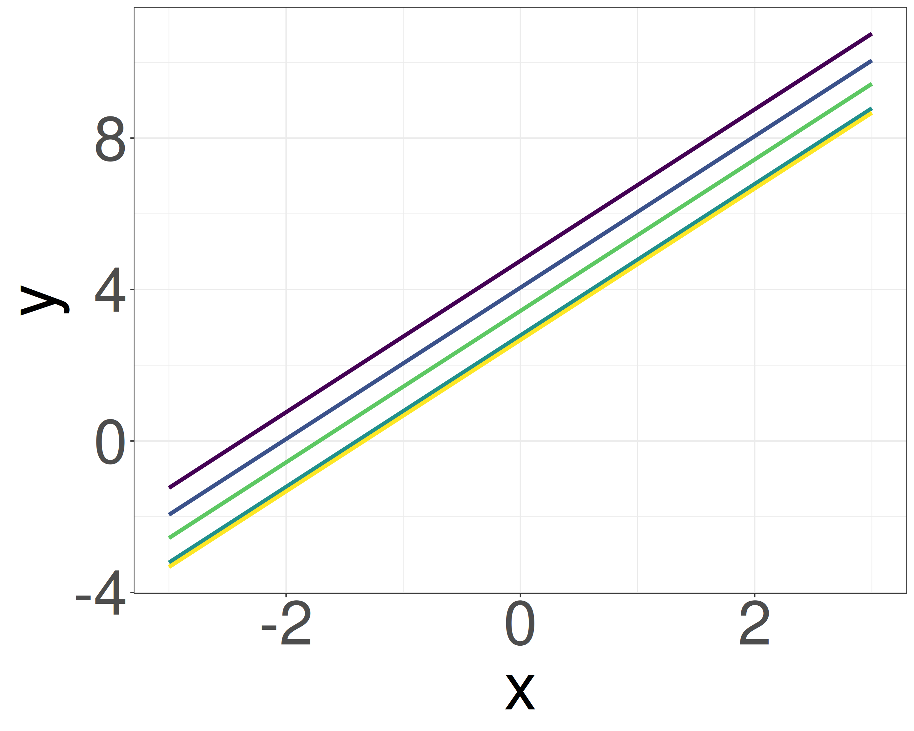
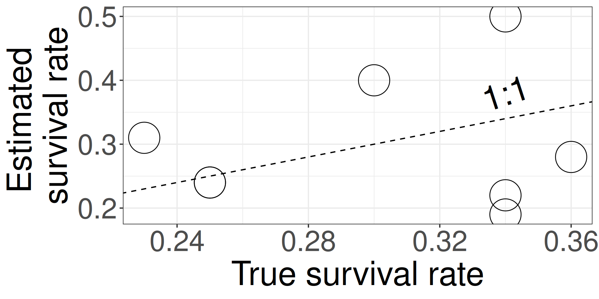

Bayesian estimation for ecology
üßëü誂Äçüíª Masatoshi Katabuchi @ XTBG, CAS
- mattocci27@gmail.com
- @mattocci
- github.com/mattocci27/bayes-afec
- https://mattocci27.github.io
June 14, 2025 The 8th Advanced Statistics Workshop Course 2025, XTBG
Objectives
We Learn
Why Bayesian estimation is useful
Why multilevel models are important
How to use and code Bayesian models in Stan and R
Outline: From Likelihood to Hierachical Bayesian Models in Ecology
ü߆Bayesian Foundations
Likelihood
Multilevel Models (Conceptual Motivation)
Conditional Probability and Bayes’s Theorem
Prior
üßëü誂ÄçüíªModeling with Stan
Tools for Bayesian Modeling
Bayesian Estimation of Simple Models (with Stan)
Multilevel Model Revisited (with Stan)
Likelihood
Assuming everyone knows the concept of likelihood
Likelihood and probability density distribution
\(f(x \mid \mu, \sigma) = \frac{1}{\sqrt{2\pi\sigma^2}}\mathrm{exp} \bigl[{-\frac{1}{2}\bigl\{\frac{x-\mu}{\sigma}}\bigr\}^2\bigr]\)
A likelihood function is a probability function that shows how likely it is to observe the data for a specific set of parameters.
e.g., when your model is \(x \sim \mathcal{N}(\mu = 0, \sigma^2 = 1)\) (normal distribution with mean 0 and variance 1), what is the probability density at x = 1.96?
- \(P(x = 1.96 \mid \mu = 0, \sigma = 1)\)
Likelihood
When your data is x = {-1.5, 0, 1.5} and your model is \(x \sim \mathcal{N}(0, 1)\), what is the probability of observing x?
- \(L = P(-1.5 \mid 0, 1) \times P(0 \mid 0, 1) \times P(1.5 \mid 0, 1)\)
- \(\mathrm{ln}\;L = \mathrm{ln}\;P(-1.5 \mid 0, 1) + \mathrm{ln}\;P(0 \mid 0, 1) + \mathrm{ln}\;P(1.5 \mid 0, 1)\)
Likelihood
Because we usually don’t know the true parameters (\(\mu\) and \(\sigma\)), we need to find the parameters that maximize the likelihood function (Maximum Likelihood Estimation).
- e.g., for a liner model \(y = ax + b\), we usually assume that \(y \sim \mathcal{N}(\mu = ax + b, \sigma^2)\), and we want to find the parameters \(a\), \(b\), and \(\sigma\) that maximize the likelihood function: \(P(y \mid ax + b, \sigma)\)
Maximum Likelihood Estimation (MLE)
- 2 survivors out of 5 seedlings: What is the survival probability of seedlings?

\(p\): survival rates, \(1-p\): mortality rate
\(L = {}_5C_2 p^2(1-p)^3\) (Binomial distribution)
\(\mathrm{ln}\;L = \mathrm{ln}\;{}_5C_2 + 2\mathrm{ln}\;p + 3\mathrm{ln}(1-p)\)
\(\frac{d\mathrm{ln}\;L}{dt} = \frac{2}{p} - \frac{3}{1-p} = 0\)
\(p = \frac{2}{5}\)
Multilevel Models (Conceptual Motivation)

Negative density dependence (NDD)
“…rare species suffered more from the presence of conspecific neighbors than common species did, suggesting that conspecific density dependence shapes species abundances in diverse communities.”
- Comita et al. 2010 -
NDD can maintain devisiety in communities by preventing common species from dominating the community.
Multilevel model (verbal model: NDD example)
Example inspired by Comita et al. 2010 Science and Song & Katabuchi et al. 2024 Ecology
Conspecific density and species abundance are scaled (mean = 0, sd = 1).
Rare species tend to be rare because they suffer stronger conspecific NDD than common species.
There is negative density dependence (NDD) of seedling survival rate, and the strength of NDD varies among species. The strength of NDD depends on species abundance.
- Survival rates p ~ conspecific density x (individual-level, logistic regression).
- Slopes b ~ species abundance (species-level).

Multilevel model (verbal model: tree allometry example)
Example inspired by Nguyen & Katabuchi Journal of Forestry Research (accepted)
Wood density is scaled (mean = 0, sd = 1).
Dense wood can support taller trees than less dense wood.
There is a power-law relationship (\(y =ax^b\)) between tree diameter (DBH) and tree maximum height, and the power-law exponent varies among species. Those relationships depend on wood density.
Tree height y ~ DBH x (individual-level)
Slope b ~ wood density (species-level)

Code implementation: two-stage MLE
Individual-level model: GLMM
We need to extract the slope coefficients for each species from fit_ind and make new_data.
- This method has low statistical power.
Code implementation: Simultaneous MLE approach
e.g., Chen et al. 2019 Science
- Combines both levels into a single model.
- Often work for simple models and data.
Code implementation: Bayesian GLMM with brms
- Syntax is similar to
lme4::glmer(). - Works well for most cases.
Looking ahead: full Bayesian implementation in Stan
e.g., Comita et al. 2010 Science, Song & Katabuchi et al. 2024 Ecology, Nguyen & Katabuchi Journal of Forestry Research (accepted)
data{
int<lower=1> N; // number of samples
int<lower=1> J; // number of sp
int<lower=1> K; // number of tree-level preditors (i.e, CONS, HETS,...)
int<lower=1> L; // number of sp-level predictors (i.e., interecept, SLA,...)
matrix[N, K] x; // tree-level predictor
matrix[L, J] u; // sp-level predictor
array[N] int<lower=0, upper=1> suv; // 1 or 0
array[N] int<lower=1, upper=J> sp; // integer
}
parameters{
matrix[K, L] gamma;
matrix[K, J] z;
cholesky_factor_corr[K] L_Omega;
vector<lower=0, upper=pi() / 2>[K] tau_unif;
}
transformed parameters{
matrix[K, J] beta;
vector<lower=0>[K] tau;
for (k in 1:K) tau[k] = 2.5 * tan(tau_unif[k]);
beta = gamma * u + diag_pre_multiply(tau, L_Omega) * z;
}
model {
vector[N] mu;
to_vector(z) ~ std_normal();
L_Omega ~ lkj_corr_cholesky(2);
to_vector(gamma) ~ normal(0, 2.5);
for (n in 1:N) {
mu[n] = x[n, ] * beta[, sp[n]];
}
suv ~ bernoulli_logit(mu);
}
generated quantities {
vector[N] log_lik;
corr_matrix[K] Omega;
Omega = multiply_lower_tri_self_transpose(L_Omega);
for (n in 1:N) {
log_lik[n] = bernoulli_logit_lpmf(suv[n] | x[n, ] * beta[, sp[n]] +
phi[plot[n]] + xi[census[n]] + psi[tag[n]]);
}
}\(s_{i,j} \sim \mathcal{B}(p_{i, j})\): likelihood
\(\mathrm{logit}(p_{i,j}) = \boldsymbol{x_{i}} \cdot \boldsymbol{\beta_{j}}\): individual-level model
\(\boldsymbol{\beta_j} = \boldsymbol{\gamma_k} \cdot \boldsymbol{u_j} + \mathrm{diag}(\boldsymbol{\sigma})\cdot \boldsymbol{L} \cdot \boldsymbol{z}\): species-level model
\(L \sim \mathrm{LkjCholesky}(\eta)\): prior (?)
\(z_j \sim \mathcal{N}(0, 1)\): prior (?)
\(\tau \sim \mathrm{Cauchy}(0, 2.5)\): prior (?)
\(\gamma_k \sim \mathcal{N}(0, 2.5)\): prior (?)
I won’t explain this now — but this is the kind of model we’ll build after learning Bayes’s theorem, priors, and a bit of linear algebra.
Conditional Probability and Bayes’ Theorem
Conditional Probability and Bayes’ Theorem
\[ P(A \mid B) = \frac{P(B \mid A) \times P(A)}{P(B)} \]
Conditional probability
Bayes’ Theorem
Forward / inverse problems
Revisiting Bayes
Probability
Probility of A:
\[ P(A) = \frac{A}{U} \]
e.g., probability of rolling a dice and getting an odd number is 3/6 = 1/2
Conditional Probability

Probability of A occurring given B has already occurred:
\[ P(A \mid B) = \frac{P(A \cap B)}{P(B)} \]
e.g.,
- P(hangover) = 4%
- P(baiju) = 1.5%
- P(hangover | baiju) = 85%.
Bayes’ Theorem
\[ P(B \mid A) = \frac{P(A \cap B)}{P(A)} \]
\[ P(A \mid B) = \frac{P(A \cap B)}{P(B)} \]
\[ P(A \mid B) \times P(B) = P(B \mid A) \times P(A) \]
\[ P(A \mid B) = \frac{P(B \mid A) \times P(A)}{P(B)} \]
Why is this useful?


Forward and Inverse Problems: PCR and disease example
- \(P(\text{Positive})\): 2%, \(P(\text{Infected})\): 0.05%
➡️Forward problem: If you are infected, what is the probability that PCR test is positive?
- \(P(\text{Positive} \mid \text{Infected})\): 95%
This is what the lab test is designed to estimate — how likely we are to observe a positive signal given the known infection status (e.g., 95 out of 100 infected samples test positive).
üîÅInverse problem (Bayesian): If the PCR test is positive, what is the probability that you are infected?
- \(P(\text{Infected} \mid \text{Positive}) = \frac{P(\text{Positive} \mid \text{Infected}) \cdot P(\text{Infected})}{P(\text{Positive})} \approx 2.4\%\)
This isn’t intuitive, but it’s the probability we actually care about — how likely someone is to be infected, given a positive test result.

Bayes’ theorem
\[ P(\mathrm{Parameter} \mid \mathrm{Data}) = \frac{P(\mathrm{Data} \mid \mathrm{Parameter}) \times P(\mathrm{Parameter})}{P(\mathrm{Data})} \]
\(P(\mathrm{Parameter} \mid \mathrm{Data})\)
- What we want to estimate (posterior): When we got our data, what were the parameters behind the data (e.g., coefficients of regressions)?
\(P(\mathrm{Data} \mid \mathrm{Parameter})\)
- When we know our parameters, what is the probability of getting our data? (i.e., likelihood)
\(P(\mathrm{Parameter})\)
- Probability to get our parameters. This is what we assume for our parameter before we see any data (i.e., prior?? — next section).
\(P(\mathrm{Data})\)
- Independent with parameters (i.e., constant)

Prior

Prior vs. Data: MLE and Bayesian comparison (Coin Toss)
We compare two coins, A and B, with the same prior but different likelihood (due to data sizes) to illustrate how prior beliefs influence posterior estimates.
MLE
- A: 2 head out of 3 tosses -> P(H) = 2/3 = 0.666
- B: 60 heads out of 100 tosses -> P(H) = 60/100 = 0.6
Bayesian
\(L_A = {}_3C_2 p^2 (1-p)^1\)
\(L_B = {}_{100}C_{60} p^{60} (1-p)^{40}\)
\(\mathrm{Prior} \propto p^{50} (1-p)^{50}\)
- Beta distribution with mean 0.5 and small variance
Bayesian Update with Prior (Coin Toss)
Posteiror \(\propto\) Likelihood \(\times\) Prior
Parameter p that maximizes the posterior of coin A. \(Post_A \propto p^2 (1-p)^1 \times p^{50} (1-p)^{50}\) \(p = 52/103 \approx 0.505\)
- \(Post_A\): With only 3 coin tosses, the likelihood is weak, so the posterior stays close to the prior.
Parameter p that maximizes the posterior of coin B. \(Post_B \propto p^{60} (1-p)^{40} \times p^{50} (1-p)^{50}\) \(p = 110/200 = 0.55\)
- \(Post_B\): With 100 coin tosses, the likelihood dominates, so the posterior shifts more towards the data.
- The same prior can have a strong or weak influence depending on how much data we have.
- We usually have some sense of a scale about parameters, we can legally use that information.
Priors in ecology: Why scale matters
- We consider variables x = {-3, …, 3} and y = {-6, …, 4}. We don’t yet know if there is a correlation (y = ax + b).
- However, given the similar scales of x and y, it’s reasonable to guess that a falls within a narrow range (e.g., strongly informative prior: -5 to 5, weakly informative prior: \(a \sim \mathcal{N}(0, 2.5)\)).
- In contrast, a slope like a = 100 (blue line) clearly doesn’t match the data (i.e., uninformative prior: \(a \sim \mathcal{N}(0, 10^4)\)).
Priors and ecology: multilevel structure for group-level effects

i indexes samples (e.g., individuals), and j indexes groups (e.g., species, sites).
- Likelihood: \(y_i \sim \mathcal{N}(ax_i + b_j, \sigma)\)
- If the parameter \(b_j\) is similar within each group (e.g., species differences, site differences), it makes sense to model:
- Prior: \(b_j \sim \mathcal{N}(\mu_b, \tau)\)
Priors and ecology: multilevel structure for spatial autocorrelation
Each observation i is associated with a grid cell (\(m,n\)), so \(\tilde{r}i = r_{m,n}\).
- When the data \(y_i\) is similar to the surrounding samples (e.g., temporal / spatial autocorrelation):
- Likelihood: \(y_i \sim \mathcal{N}(\mu + \tilde{r_i}, \sigma)\)
- Prior (spatial effect): \(\tilde{r_i} = r_{m, n} \sim \mathcal{N}(\phi_{m,n}, \tau)\)
- \(\phi_{m,n}\) = average of 8 neighbors around \(r_{m,n}\)
\[ \begin{align*} \phi_{m,n} = \frac{1}{8} (& r_{m-1,n-1} + r_{m-1,n} + r_{m-1,n+1} + \\ & r_{m,n-1} + r_{m,n+1} + \\ & r_{m+1,n-1} + r_{m+1,n} + r_{m+1,n+1}) \end{align*} \]
Multilevel model
Baseball statistics
https://www.mlb.com/stats/batting-average

Eight school problem
[1] Rubin, D. B. Estimation in parallel randomized experiments. Journal of Educational Statistics 6, 377–401 (1981).
[2] Gelman, A. et al. Bayesian Data Analysis, Third Edition. (Chapman & Hall/CRC, 2013).

Eight species problem
Newly developed example
What is the survival rate?
Eight species problem (separate estimates)
What is the survival rate?
| sp | n | suv | p_like |
|---|---|---|---|
| A | 41 | 9 | 0.22 |
| B | 45 | 18 | 0.40 |
| C | 32 | 6 | 0.19 |
| D | 18 | 5 | 0.28 |
| E | 33 | 8 | 0.24 |
| F | 26 | 8 | 0.31 |
| G | 46 | 11 | 0.24 |
| H | 16 | 8 | 0.50 |
- If we estimate each species separately, survival rates will be
p_like
Eight species problem (separate estimates)
What is the survival rate?
| sp | n | suv | p_like | p_true |
|---|---|---|---|---|
| A | 41 | 9 | 0.22 | 0.34 |
| B | 45 | 18 | 0.40 | 0.30 |
| C | 32 | 6 | 0.19 | 0.34 |
| D | 18 | 5 | 0.28 | 0.36 |
| E | 33 | 8 | 0.24 | 0.25 |
| F | 26 | 8 | 0.31 | 0.23 |
| G | 46 | 11 | 0.24 | 0.25 |
| H | 16 | 8 | 0.50 | 0.34 |
p_trueranges [0.23, 0.36]p_likeranges [0.19, 0.5]The estimate shows the larger variation
Because of the small sample size (common in ecological studies)

We know p_true because we generated this data using p_true as a known parameter. In practical scenarios, we don’t know p_true.
Two extreme cases (pooled estimates)
- \(S_i \sim \mathcal{B}(N_i, p)\)

- This model doesn’t consider the variation among species
Two extreme cases (separate estimates)
- \(S_i \sim \mathcal{B}(N_i, p_i)\)

- This model assumes that survival rates are 100% independent among species
More realistic estimates (multilevel models)
\(S_i \sim \mathcal{B}(N_i, p_i)\)
\(z_i \sim \mathcal{N}(\mu, \sigma)\) where \(z_i = \mathrm{logit}(p_i) = \mathrm{log}\frac{p_i}{1 - p_i}\)
\(\sigma\) determines species variation
The overall survival rate is 0.5 in this example. We have some sense of a scale for \(\sigma\).


Stan code for a simple multilevel logistic model (non-verbal model)
data {
int<lower=1> I; // number of species
array[I] int<lower=0> suv; // number of survivors
array[I] int<lower=0> N; // number of individuals
array[I] int<lower=1, upper=I> ii; // integer
}
parameters {
real mu;
real<lower=0> sigma;
vector[I] z_tilde;
}
transformed parameters {
vector[I] z;
z = mu + sigma * z_tilde;
}
model {
mu ~ normal(0, 5);
z_tilde ~ std_normal();
sigma ~ std_normal();
for (i in 1:I)
suv[i] ~ binomial_logit(N[i], z[ii[i]]);
}
generated quantities {
vector[I] log_lik;
vector[I] p = inv_logit(z);
for (i in 1:I)
log_lik[i] = binomial_logit_lpmf(suv[i] | N[i], z[ii[i]]);
}Centered parameterization
\(S_i \sim \mathcal{B}_{logit}(N_i, z_i)\): likelihood
\(z_i \sim \mathcal{N}(\mu, \sigma)\) : prior
\(\sigma \sim \mathcal{N}(0, 1)\): prior
\(\mu \sim \mathcal{N}(0, 5)\): prior
Non-Centered parameterization
\(z_i = \mu + \sigma \cdot \tilde{z_i}\)
\(\tilde{z_i} \sim \mathcal{N}(0, 1)\): prior
Multilevel models yield better estimates
| sp | n | suv | p_like | p_true | p_bayes |
|---|---|---|---|---|---|
| A | 41 | 9 | 0.22 | 0.34 | 0.26 |
| B | 45 | 18 | 0.40 | 0.30 | 0.32 |
| C | 32 | 6 | 0.19 | 0.34 | 0.25 |
| D | 18 | 5 | 0.28 | 0.36 | 0.28 |
| E | 33 | 8 | 0.24 | 0.25 | 0.27 |
| F | 26 | 8 | 0.31 | 0.23 | 0.29 |
| G | 46 | 11 | 0.24 | 0.25 | 0.27 |
| H | 16 | 8 | 0.50 | 0.34 | 0.32 |

Closed symbols (
p_bayes) align more closely with the 1:1 line, indicating more accurate estimates.This model compensates for limited data by using prior knowledge that species responses are somehow similar and compensates for limited data.
MLE vs. Bayesian estimation
Bayesian estimation (stan)
data {
int<lower=1> I; // number of species
array[I] int<lower=0> suv; // number of survivors
array[I] int<lower=0> N; // number of individuals
array[I] int<lower=1, upper=I> ii; // integer
}
parameters {
real mu;
real<lower=0> sigma;
vector[I] z_tilde;
}
transformed parameters {
vector[I] z;
z = mu + sigma * z_tilde;
}
model {
mu ~ normal(0, 5);
z_tilde ~ std_normal();
sigma ~ std_normal();
for (i in 1:I)
suv[i] ~ binomial_logit(N[i], z[ii[i]]);
}
generated quantities {
vector[I] log_lik;
vector[I] p = inv_logit(z);
for (i in 1:I)
log_lik[i] = binomial_logit_lpmf(suv[i] | N[i], z[ii[i]]);
}MLE vs. Bayesian estimation
Bayesian estimation (brms)
- Several packages, like
brmsandrstanarm, offer Bayesian estimation using syntax similar tolme4.
MLE vs. Bayesian estimation
MLE (e.g., lme4)
\(L(\mu, \sigma) = \prod_i \int_{-\infty}^{\infty} \mathcal{B}(S_i \mid N_i, p_i) \times \mathcal{N}(\mathrm{logit}(p_i) \mid \mu, \sigma) dp_i\)
Analytically find \(\mu\) and \(\sigma\) to maximize \(L\)
An analytical solution is often not available (this example is easy though)
Bayesian estimation
\(P(\mu, \sigma \mid S_i, N_i) \propto \prod_i \mathcal{B}(S_i \mid N_i, p_i) \times \prod_i \mathcal{N}(\mathrm{logit}(p_i) \mid \mu, \sigma) \times\) \(\;\;\;\;\;\;\;\;\;\;\;\;\;\;\;\;\;\;\;\;\;\;\;\;\;\mathcal{N}(\mu \mid 0, 5) \times \mathcal{N}(\sigma \mid 0, 2.5)\)
Numerically find \(\mu\) and \(\sigma\) to maximize \(P\) (aka MCMC)
MCMC works even if an analytical solution is not available
Bayes’s theorem supports the use of MCMC
Summary
Why Bayesian estimation is useful
We can use a priori information about parameters in our model
Models are flexible
MCMC works even if models are complicated
Why multilevel models are important
Multilevel models have a good balance between pooled estimates and separate estimates, which is useful for practical sample sizes
Multilevel models handle nested or hierarchical data structures, a common and important scenario in ecological research (e.g., trees within species, community within sites, etc.).
References